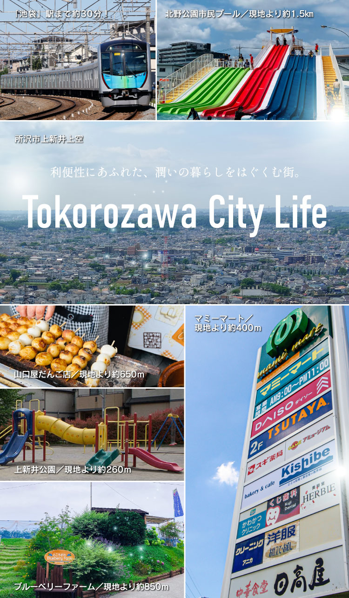
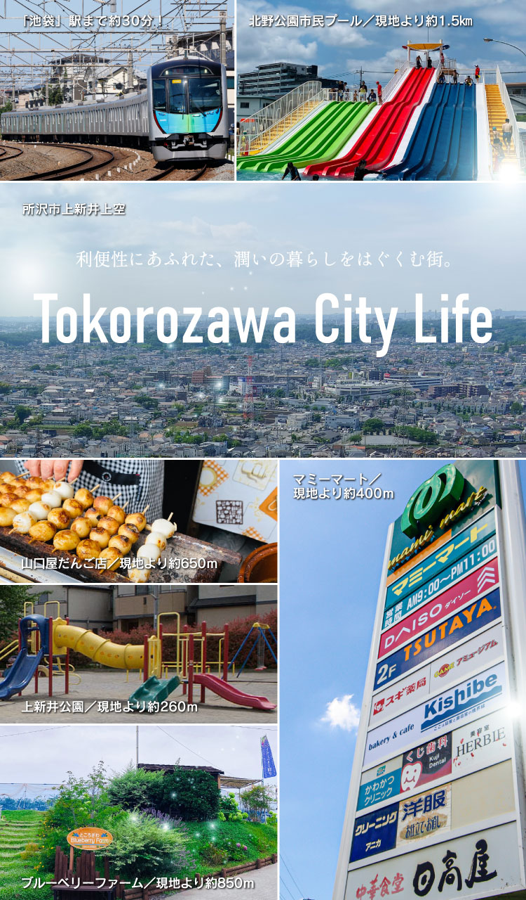

教育施設も近くて安心です。
上新井小学校 （約800ｍ／徒歩10 分）
小手指中学校 （約1650ｍ／徒歩21 分）
北野保育園 （約610ｍ／徒歩8 分）
所沢第六文化幼稚園 （約1600ｍ／自転車8 分）
コンビニも気分で選べます。
ミニストップ所沢上新井店 （約150ｍ／徒歩2 分）
セブンイレブン上新井2 丁目店 （約450ｍ／徒歩6 分）
ローソン所沢小手指台店 （約500ｍ／徒歩6 分）
デイリーヤマザキ上新井店 （約600ｍ／徒歩8 分）
バラエティに富んだその他の施設
ノジマ所沢本店 （約450ｍ／徒歩6 分）
オートバックス所沢店 （約600ｍ／自動車2 分）
さいとう内科クリニック （約1000ｍ／自転車5 分）
すき家所沢上新井店 （約270ｍ／徒歩4 分）
ページTOP
 
